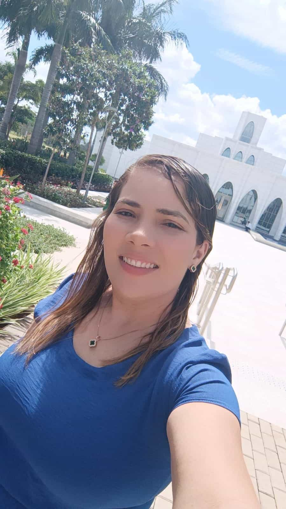

Maria Vitória Santa Santiago de Azevedo | WDD 130

Olá! Meu nome é Maria Vitória Santa Santiago de Azevedo, sou de Paracatu, Minas Gerais e sou estudante da BYU Pathway. Gosto de aprender sobre programação, tecnologia e desenvolvimento de sites. Busco melhorar minhas habilidades todos os dias para crescer profissionalmente na área de tecnologia.
Tenho 29 anos, sou de Rio Grande do Norte, porém moro em Paracatu, Minas Gerais a 15 anos, mas costumo ir minha cidade Natal todos os anos nas minhas ferias, gosto muito de la.
Também gosto de desafios que me incentivam a evoluir constantemente. Tenho interesse em desenvolver projetos criativos, aprender novas ferramentas digitais e ampliar meus conhecimentos em tecnologia. Sou dedicada, determinada e acredito que com esforço e persistência posso alcançar meus objetivos profissionais, construindo uma carreira sólida e de sucesso.
Nos momentos livres, gosto de ouvir música, conhecer novos lugares e passar tempo com minha família. Valorizo aprendizado contínuo e acredito que pequenas conquistas geram grandes resultados."Sou uma pessoa esforçada, organizada e sempre disposta a aprender, buscando crescimento pessoal e profissional através de novas experiências.